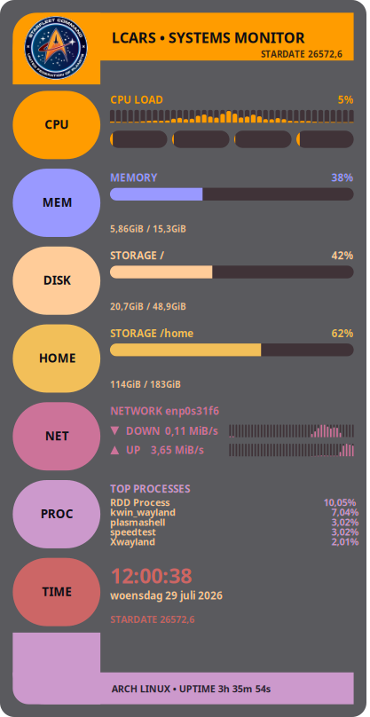

Systems Monitor
A scalable full-system LCARS console, on your desktop
LCARS-Conky redraws your system stats every second as an LCARS-style console panel: swept elbow brackets, color-coded sidebar pills, and pill-shaped meters, all drawn live with Lua and Cairo — no static image, no compositor tricks.
One panel covers CPU, memory, storage, network throughput, your top processes and a clock, with a cosmetic stardate for good measure.

What it shows
Features
- CPU load bar + per-core meter row
- Memory usage with used/total readout
- Storage panel per mount point (/, /home, add more)
- Network throughput, interface auto-detected
- Top 5 processes by CPU
- Clock, date, and a cosmetic stardate
- One
HEIGHTsetting resizes the whole panel - No blocking I/O in the draw loop
Get running
Install
-
Clone the repo:
git clone https://github.com/wim66/lcars-conky.git cd lcars-conky
-
Start it directly, or via the included autostart script (which kills any running Conky first):
conky -c conky.conf # or ./autostart.sh
-
Add
autostart.shto your desktop environment's session startup if you want it running automatically on login.
Needs a Conky build with Lua + Cairo support (conky -v should list Lua).
Imlib2 support is optional — used for the header badge image, with an automatic
drawn-badge fallback if it's not compiled in.
Make it yours
Configuring
Most settings live at the top of widget.lua:
| Setting | What it does |
|---|---|
iface | Network interface for the NET panel — auto-detected at startup, override if it guesses wrong |
sections | Which panels appear, and in what order |
fs_mount | Mount point for the primary DISK panel |
badge_png / badge_x/y/w/h | Header badge image, positioned independently of the title |
Resizing is a one-line change in conky.conf:
local HEIGHT = 900 -- try 600 for a compact version
Width is derived from HEIGHT automatically, and the widget scales
its whole drawing to fit — nothing else needs adjusting.
Under the hood
File structure
Fine print
Credits
Star Trek and the LCARS design language are the property of Paramount. This is an unofficial, non-commercial fan project made for personal desktop customization — not affiliated with or endorsed by Paramount or CBS.